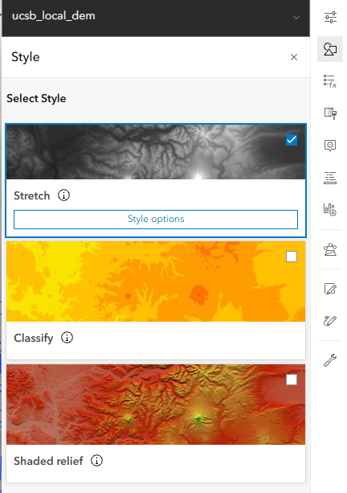
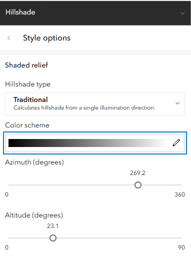
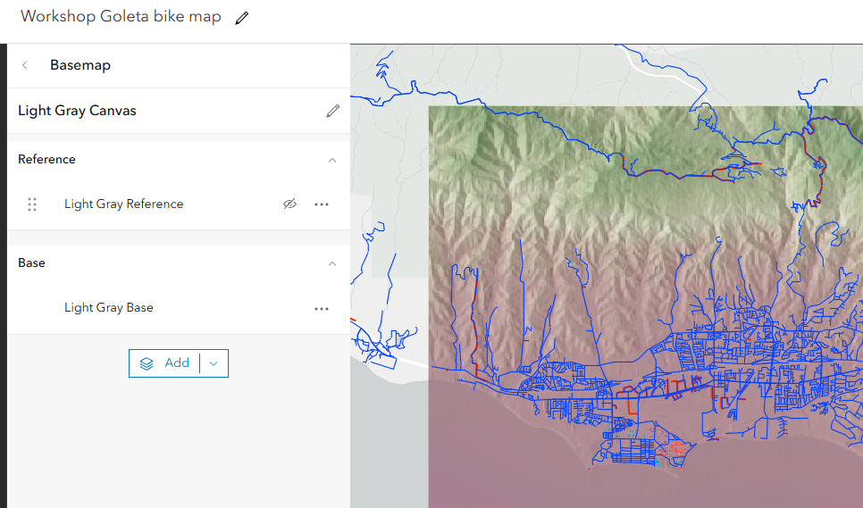
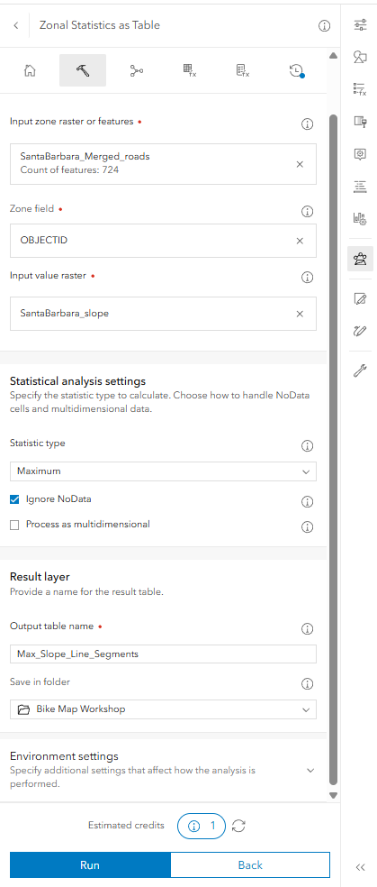
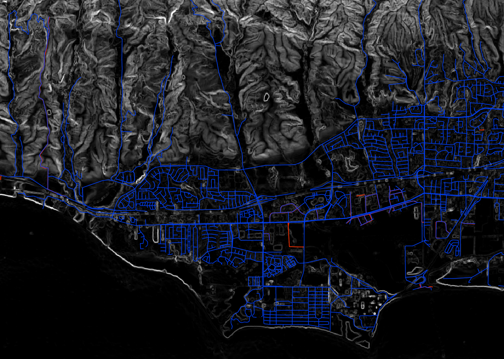

Let’s Explore Data
Exploring Data Types in ArcGIS Online
This lesson focuses on understanding the different types of geographic data available in ArcGIS Online and learning how to import and work with your own data.
Annotations vs. Geospatial Data
In Workshop 1, we introduced sketch layers to draw points, lines, and polygons directly on top of the map. While sketches are convenient for quick markups and annotations, they are not true GIS data layers. Sketches lack an underlying database table and cannot be queried, filtered, or used in spatial analysis.
In contrast, geospatial feature layers link spatial geometries (points, lines, or polygons) to structured records in an attribute table. Each feature has defined attribute fields (e.g., name, speed limit, road type, elevation) with specific data types (such as text strings, integers, floats, and dates). This tabular structure makes it possible to filter features, symbolize data based on attributes, and calculate new spatial relationships.
Review: Workshop 1 Recap
- Open and explore the completed map from Workshop 1 (
Workshop campus bike map). - Review layer symbology and experiment with the style sliders (such as Counts & Amounts).
- Perform a Save As before moving forward so each participant has their own working map copy saved in their personal ArcGIS Online workspace.
Types of Geospatial Data
Geographic data generally falls into two primary models: vector and raster.
Vector Data
Vector data represents discrete geographic features using coordinate geometry:
- Points: Single \((X, Y)\) coordinate pairs representing discrete locations (e.g., bike racks, bus stops, accident locations).
- Lines (Polylines): Ordered sequences of vertices connecting locations to represent linear features or networks (e.g., bike paths, roads, transit routes, streams).
- Polygons: Closed shapes enclosing an area defined by connected coordinate vertices (e.g., campus buildings, land parcels, parks, water bodies).
Every shape is tied to a row in an attribute table, where each column holds specific properties describing that feature. For example …
Raster Data
Raster data represents continuous phenomena across the landscape as a regular grid of square cells (pixels) organized into rows and columns:
- Single-band rasters: Each pixel contains a single numerical value representing a continuous measurement (such as elevation in a Digital Elevation Model [DEM], slope, or temperature) or an integer code representing a category (such as land cover types).
- Multi-band rasters: Each pixel contains multiple values across different spectral channels or bands (such as red, green, blue, and near-infrared bands in aerial photography or satellite imagery).
Finding and Adding Data Layers
You can bring data into ArcGIS Online through several avenues:
- Importing Tabular Data (CSV): Import spreadsheet files containing latitude and longitude coordinates (e.g., bus stops or bike racks) and convert them directly into point feature layers.
- Uploading Spatial Datasets: Upload spatial files from your local computer (such as Shapefiles, GeoJSON, or rasters) to publish them as hosted feature layers.
- Living Atlas of the World: Browse and add datasets from Esri’s repository of global GIS data, including environmental, demographic statistics, infrastructure networks, and satellite imagery.
- All ArcGIS Online accounts created under the UCSB site license are allocated 1000 service credits per license year.
- Transactions: Some analysis operations and storage consume service credits. For more information, visit Esri’s Understand Credits page.
- Manage your content: Periodically review and delete unnecessary hosted layers and analysis outputs to conserve credits.
- Data Stewardship: Objects stored in ArcGIS Online should be considered ephemeral. Your content access depends on the UCSB Library’s Higher Education Site License.
Narrative
The Story
Our goal is to plan a scenic, safe, and challenging bicycle route that leads from the UCSB campus into the surrounding Goleta community and the Santa Ynez foothills. To accomplish this, we need to expand beyond campus bike paths and incorporate regional road networks along with elevation data to analyze terrain and slope.
Adding New Material to an Old Map
Our finished product for this session will be the Workshop Goleta bike map. We will take time to preview this finished map before building it step by step.
** link and screenshot of finished map goes here. **
The layers we will work with expand upon Workshop 1 with a wider geographic extent:
- Roads and Paths: An expanded street and bicycle path network covering the Goleta and Santa Barbara area, extracted from OpenStreetMap.
- Digital Elevation Model (DEM): A raster layer covering campus, the coastal plain, and extending into the foothills.
- Transit: We may get tired, so we will add bus stops to our map in case we need to put our bike on the bus to get back to campus. We will create this layer from a CSV file.
Add Roads
To examine routes beyond campus, we zoom out to the broader regional area:
- Start with your freshly saved copy of the map in your personal workspace.
- Add the
SantaBarbara_Merged_roadslayer from your organization or the workshop group. - Open the attribute table to inspect fields such as highway classification, road surface, and speed limits, and symbolize the roads to distinguish bike-friendly streets from arterial highways.
Digital Elevation Models (DEM)
Next, we add a Digital Elevation Model: ucsb_local_dem.
What is a DEM?
A Digital Elevation Model (DEM) is a single-band continuous raster where each cell represents bare-earth surface elevation relative to a vertical datum (mean sea level). The ucsb_local_dem dataset covers the UCSB campus, Goleta Slough, and the rising Santa Ynez foothills, derived from high-resolution USGS 3D Elevation Program (3DEP) LiDAR surveys.
In the layer properties, explore the raster statistics: note the minimum elevation near sea level (0) along the coast and slough, rising to hundreds of feet in the foothills, as well as the grid cell resolution. (make sure we are feet and not meters)
Applying Color Schemes
By default, continuous raster layers display using a grayscale “Stretch” renderer (low values dark, high values light). To clearly distinguish elevation changes across the coastal plain and mountains, let’s change the symbology to a continuous or diverging color ramp (e.g., a below-and-above zero diverging ramp or an elevation palette).

Creating Shaded Relief (Hillshade) on the Fly
To give the terrain realistic three-dimensional depth and surface texture, we can generate a shaded relief visualization dynamically:
- Duplicate the
ucsb_local_demlayer. - Rename the two DEM layers for clarity: name the top layer
Elevation (Color)and the bottom layerElevation (Shaded Relief). - Change the symbology style to Shaded Relief.
Lighting our terrain
Shaded relief simulates how sunlight illuminates terrain, casting shadows based on the position of the sun measured as two angles: Azimuth and Altitude
- Azimuth: The compass direction from which the illumination source (the sun) originates, measured in degrees clockwise from north (0° = North, 90° = East, 180° = South, 270° = West). In cartography, the sun is traditionally positioned in the northwest (315°) or west (270°) to match how the human brain interprets light and shadow, preventing an optical illusion known as “relief inversion” where mountains appear as valleys. For our map, we position the light source from the west.
- Altitude: The angle of the sun above the horizon, measured from 0° (level with the horizon at sunrise/sunset) to 90° (directly overhead at solar noon). A lower altitude (e.g., 30°–45°, typical of low winter sun) produces longer, more dramatic shadows that accentuate ridgelines, canyons, and valleys.

Adjust the transparency of the top colored elevation layer so the shaded relief beneath shows through, creating an illuminated 3D terrain effect under our roads.

Save your map at this point.
Layer Management, Rasters, and Additional Vectors
- Re-order layers: Ensure vector layers (roads and paths) remain on top of the raster elevation layers in the layer stack so they are not hidden.
- Categorical Rasters vs. Continuous Rasters:
- While elevation is a continuous raster (values change smoothly along a numerical gradient), other rasters are categorical rasters (e.g., land cover classification datasets from the Living Atlas, where integer cell values represent categories such as urban development, forest, or water). ** let’s be adding one here **
- Imagery Layers vs. Basemaps:
- An basemap sits at the bottom of the map canvas, serving purely as a static background context. Esri has options that are satellite and aerial views.
- An imagery layer is a data layer added to your map stack. It can be re-ordered above or below other layers, adjusted with transparency and blend modes, queried for pixel values, and analyze for groundcover characteristics.
- Below we will add a Planet satellite view to campus to explore.
Satellite view
Vector Layers
- Import bus stops or trailheads from a CSV spreadsheet using
coordinate columns (latitude and longitude) to see how external
tabular data integrates with existing road and elevation layers.
- Refresh memory on building layer
- Add a living atlas layer?Looking Ahead: Spatial Analysis (Preview for Workshop 3)
In Workshop 3, we dive deeper into quantitative spatial analysis. The data layers we prepared today form the foundation for analyzing terrain and route difficulty:
- Calculate slope from the DEM (a single-channel continuous raster measuring steepness)
- Overlay slope values onto road segments
- Identify and highlight the steepest climbs (maximum slope)Analysis Workflow Overview
- Slope Calculation: Use raster analysis tools to calculate a slope raster from the DEM, expressing terrain steepness in degrees or percent rise.
- Zonal Statistics as Table: With the slope raster and the road network loaded, run Raster Analysis > Zonal Statistics as Table to compute summary statistics (such as the maximum or mean slope) for each road line.

- Joining Statistics to Roads: The zonal statistics tool outputs a standalone data table. To visualize these slope measurements on the map, join the table back to the road vector layer using Tools > Summarize data > Join Features, matching on a common identifier such as
OBJECTID.

- Once joined, roads can be symbolized by slope steepness, allowing us to pinpoint the steepest hill climbs for our ride!